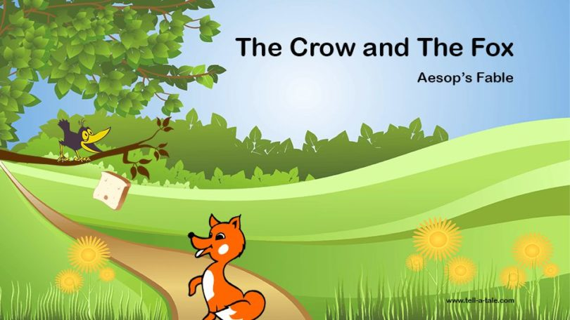
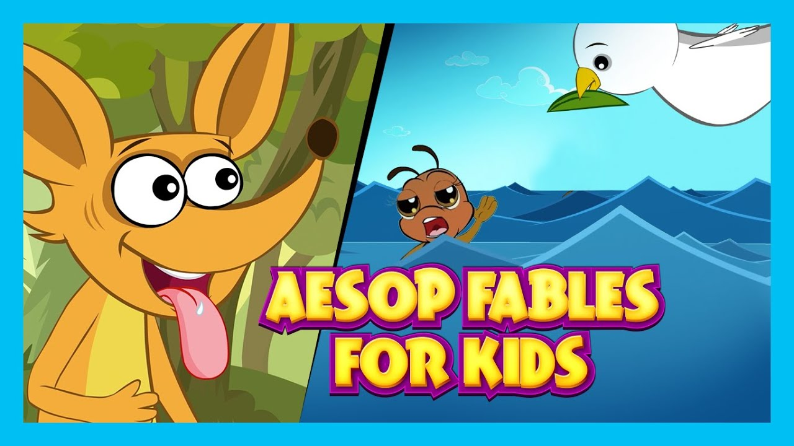

Aesop's Fables is a collection of tales by the Greek storyteller Aesop.
Most of the tales included here were translated and edited by Reverend George Fyler Townsend (1814-1900) in England and published under the title, Aesop's Fables. Townsend's translations were influential on many subsequent collections of fables. Some of the tales included here were taken from the book How to Tell Stories to Children and Some Stories To Tell, by Sara Cone Bryant and published in London in 1918. In some cases, we have included both Townsend's version and Bryant's version of the same tale.
Source: This book was compiled by the Florida Center for Instructional Technology and includes passages from multiple sources. Please refer to the passage pages for further source information.
Milo Winter's pictures have been transformed for this interactive book, and now readers can interact with the charming illustrations to see and hear them move: a choosy heron eyes the fish swimming at his feet, a fox swishes his tail, a mouse chews a rope and frees a lion.